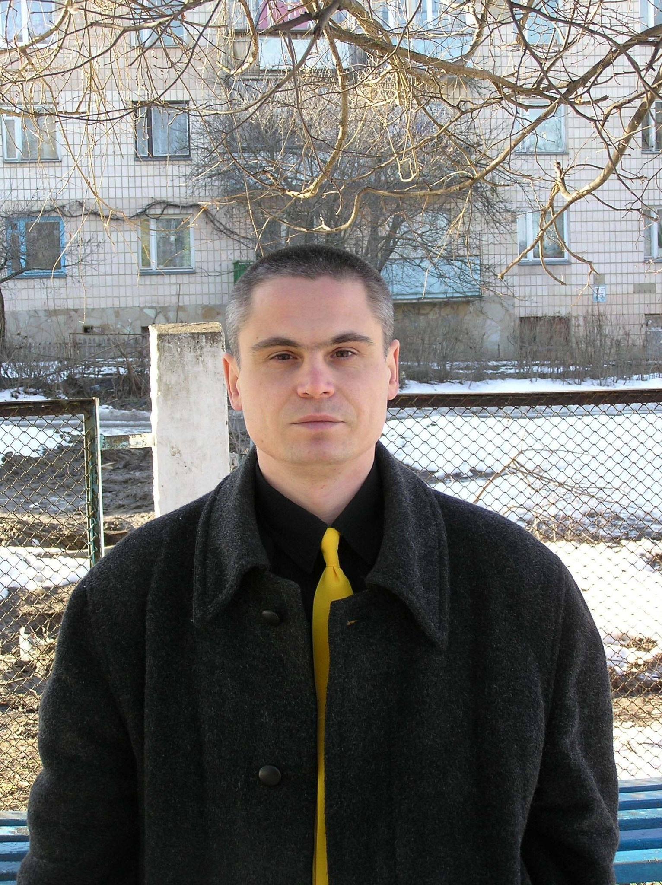
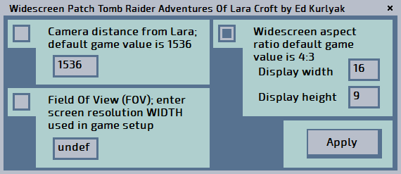
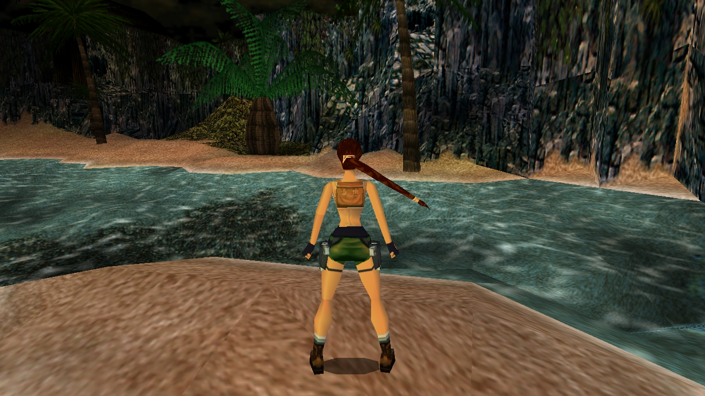
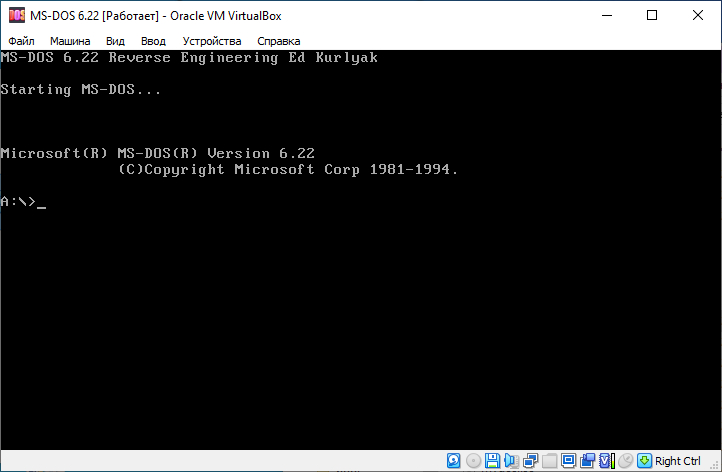

ED KURLYAK (black4JOSS) – SOFTWARE DEVELOPER
Персональный сайт разработчика из Украины, специализирующегося на C++, реверс-инжиниринге и компьютерной графике.
🔧 Патчи для игр
Скачивайте widescreen-патчи для Tomb Raider 2–5 и Need for Speed, исправляющие соотношение сторон и позволяющие запускать игры без искажений на современных мониторах.
💻 Исходный код и проекты
Открытые проекты на C++, реверс-инжиниринг (Tomb Raider 1), ремейки игр, работа с DirectX и низкоуровневой графикой.
🧠 Обучение и статьи
Материалы по дизассемблированию, алгоритмам, математике, 3D-графике и разработке игр.
🌐 Дополнительно
GitHub-портфолио, инструменты, эксперименты с MS-DOS и системным программированием.
Меня зовут Эдуард Курляк, я ИТ-шник, и программист из Украины. Я создал widescreen patch для компьютерной игры Томб Райдер, и этот патч стал очень популярным среди игроков этой игры - так я и прославился в интернете. :-). Так же я создал widescreen патч для игры Need For Speed Hot Pursuit 2. У меня нет профессионального образования в сфере ИТ, я самоучка, ВУЗ закончил в сфере сельского хозяйства, и мне все приходилось изучать в ИТ самому. Компьютерами начал заниматься с 1989 года во время учебы в техникуме- после основных занятий посещал кабинет информатики по своей инициативе, программировал на BASIC. Техникум (колледж) окончил на отлично, ВУЗ окончил за 4 года досрочно вместо 5ти.
Интересные люди с которыми я познакомился в интернете.
Ричард Флорвер- программист из Великобритании, создавал компьютерную игру Tomb Raider 4, мне он рассказал как они создавали объемный туман в играх Томб Райдер, я повторил его реализацию на С++.
Гевин Руммери - программист из Великобритании, создавал игру Томб Райдер 1 и 2. Со мной он поделился информацией по движку игры Томб Райдер, в частности как происходит анимация модели Лары в игре. Кстати, я на Фейсбук выложил публикацию о моем патче- Гевин Руммери поставил Лайк. :-)
Наттан Маккри - композитор из Великобритании, создавал музыку для игры Тобм Райдер, со мной поделился информацией, как он создавал музыкальное сопровождение для Томб Райдер.
Стелла Луне - известный составитель прохождений для игры Томб Райдер, на своем сайте она выложила мой патч, и информацию о патче, когда я начал его распространять в интернете, и этим мне очень помогла- благодаря ее сайту мой патч быстро стал известным среди фанатов.
Андре ЛаМот - программист и компьютерный гений из Кремниевой Долины США. Автор книг по разработке компьютерный игр, и компьютерной графики. Я читал его книги, и задавал ему вопросы. Так же в одной его книге есть игра Warlock которую он разработал, я сделал ремейк этой игры под Win10 потому что оригинальный Warlock был разработан под MS-DOS. Ему очень понравился мой ремейк.
Захарий Леви - после того как я создал свой widescreen patch мне написал фанат Томб Райдер из Австралии Захарий Леви- он администратор группы на фейсбук, группа посвящена игре Томб Райдер. Захарий сказал что я сделал очень хорошее дело, написал свой патч для Томб Райдер. Захарий так же публиковал информацию о моем патче, и помогал его распространять.
Sardoc Spamfish - фанат компьютерной игры Томб Райдер Sardoc Spamfish пропатчил игру моим патчем и выложил видео прохождение на dailymotion, сейчас мы общаемся, обуждаем серию игр Тобм Райдер и прохождение.
This page provides a widescreen patch for classic Tomb Raider games including TR2, TR3, TR4 and TR5. Fix aspect ratio, resolution and field of view (FOV) for modern systems.
The patch improves compatibility with modern hardware and removes stretching issues in widescreen resolutions. Works on Windows 10 and 11.

Мой патч Tomb Raider Widescreen на Raiding The Globe — официальный фан-сайт по серии Tomb Raider
Мой патч Tomb Raider Widescreen на вики-сайте PCGamingWiki
Мой патч для Need For Speed Hot Pursuit 2 на playground.ru
Мой патч Old Games Widescreen на вики-сайте PCGamingWiki
Вид компьютерной игры Tomb Raider 2 - 3 - 4 на широкоформатном мониторе ДО применения широкоформатного патча - искажение пропорций изображения. Использовалось разрешение 1366x768 без широкоформатного исправления

Вид компьютерной игры Tomb Raider 2 - 3 - 4 на широкоформатном мониторе ПОСЛЕ применения широкоформатного патча - без искажений пропорций изображения. Разрешение игры после применения широкоформатного патча 1366x768

В данном разделе можно загрузить MS-DOS загрузочный сектор, исходный код NASM, загрузочный сектор для флоппи диска. Исходный код загрузочного сектора можно откомилировать при помощи NASM, затем создать образ флоппи дискеты, добавить загрузочный сектор в этот образ флоппи дисекты, и загрузить образ флоппи дискеты в программе Virtual Box (или любом другом эмуляторе).

В данном разделе можно загрузить широкоэкранный патч Old Games Widescreen Patch для компьютерной игры Need For Speed Hot Pursuit 2 и широкоэкранный патч Tomb Raider widescreen patch (расширенная версия Old Games Widescreen Patch) для Tomb Raider 2 - 3 - 4 - 5. Эти игры были созданы в 1996- 2002 гг. для дисплеев с пропорциями экрана 4x3, до того как появились широкоэкранные дисплеи 16x9, 16x10 и другие. Мой патч позволяет запускать игры Tomb Raider 2 - 3 - 4 - 5 и Need For Speed Hot Pursuit 2 на любых современных широкоформатных дисплеях и пропорциях экрана 16х9, 16x10 и др. без искажений соотношения сторон игрового экрана. Так же возможно загрузить шикороэкранные патчи для игр Need For Speed Most Wanted и Need For Speed Underground 1 - 2.
Файл ddraw.dll в этом проекте позволяет запускать Tomb Raider 3 в оконном режиме. Просто поместите файл ddraw.dll в папку с игрой, туда, где находится tomb3.exe. Затем, используя настройки игры, установите разрешение меньше, чем разрешение вашего экрана, и запустите игру как обычно. Этот файл ddraw.dll подходит для игр Tomb Raider 3 и Tomb Raider 3: The Lost Artifact.
Tomb Raider 3 Windower на GitHub https://github.com/ed-kurlyak/TR3-windower
Tomb Raider 1 source code, без DirectX/OpenGL, проект software rendering.
Протестировано под Windows 10. Скомпилировано в Visual Studio 2019.
Код находится в состоянии разработки, но играть уже можно. Поместите файлы уровней в папку DATA. См. Файл winmain.cpp для настроек.
Особенности:
Описание внутреннего устройства игры Tomb Raider 1 ЧИТАТЬ
Страница проекта Tomb Raider 1 на GitHub https://github.com/ed-kurlyak/TOMBRAID